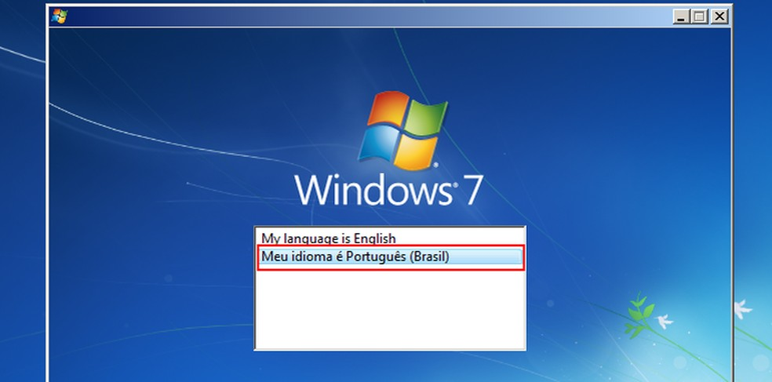
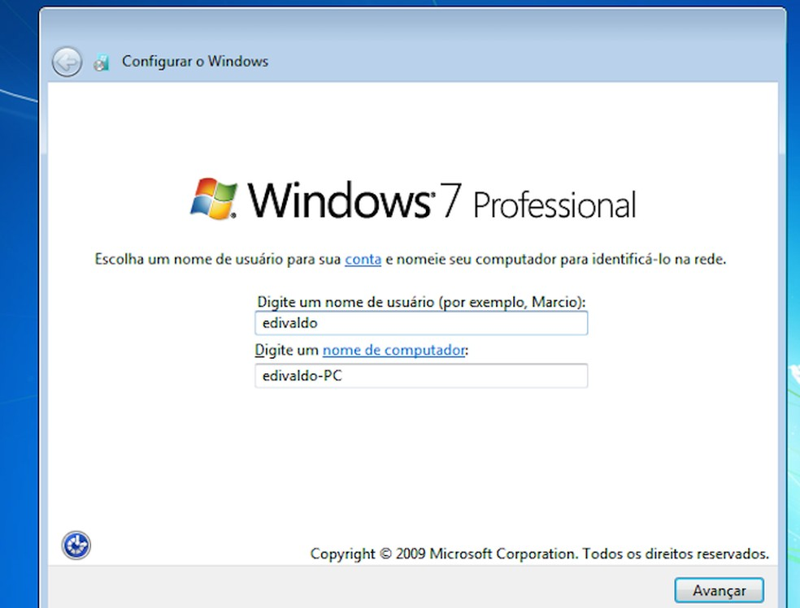

SoftwareCenter: Como instalar o windows 7
Descubra como Instalar o Windows 7. Em Apenas 17 Passos.
Por Bruno Pinheiro; Para O SoftwareCenter
04/03/2022 17h32 • Atualizado há 2 dias
Requisitos Mínimos para instalar o Windows 7
Antes de instalar o novo sistema operativo é necessário verificar se o seu computador é compatível
• Processador 32-bits de 1GHz;
• 1GB de RAM;
• 16 GB de espaço disponível no disco rígido
• Placa gráfica compatível com DirectX 9 com driver WDDM 1.0 ou superior
Instalação
Passo 1. Faça o download da ISO do Windows 7 no HeiDoc. Caso não saiba como instalar ou usar esta ferramenta disponibilizamos um post sobre isso. (Como utilizar o HeiDoc ISO Downloader)
Passo 2. Com o computador ligado, insira o pendrive com a ISO do Windows 7 no PC.
Passo 3. Reinicie o PC e aguarde o reconhecimento do disco
Passo 4. Quando aparecer a mensagem “Press any key to boot from CD or DVD”, aperte qualquer tecla.
Passo 5. No primeiro ecrã do instalador, clique na opção “Meu idioma é Português (Portugal)” ou outra linguagem que deseja usar.
Passo 6. Em seguida, escolha as opções de localização (idioma, formatos e layout de teclado). Depois, clique no botão “Avançar”.

Passo 7. No próximo ecrã, clique no botão “Instalar agora”.
Passo 8. Na janela seguinte, aceite os termos de uso do sistema e clique no botão “Avançar”.

Passo 9. No novo ecrã, selecione a opção “Atualização”.
Passo 10. Selecione o disco onde o sistema será instalado e clique em “Opções de unidade”
Passo 11. A partir desse ponto, você precisa apenas aguardar, pois o instalador irá preparar, copiar e instalar os arquivos.

Passo 12. Depois de passar da instalação e reiniciar, digite o nome de utilizador e do PC para o instalador. Em seguida, clique no botão “Avançar”.
Passo 13. No próximo ecrã, digite a senha do utilizador duas vezes. Depois escreva uma dica de senha que só você sabe, para quando precisar recuperar a senha. Para continuar, clique no botão “Avançar”.

Passo 14. No ecrã seguinte, digite a chave de ativação ou deixe em branco para ativar depois. Novamente, clique no botão “Avançar”.
Passo 15. Selecione uma das opções de atualização do sistema para melhorar a segurança. Clique no botão “Avançar”.

Passo 16. Configure as opções de data e hora do sistema. Para continuar a instalação, clique no botão “Avançar”.

Passo 17. Por fim, selecione o tipo de rede que o sistema usará para a conexão atual, clicando em um dos itens. Em poucos minutos, você verá a área de trabalho do Windows 7 e estará terminada a instalação.
Pronto! Você já está com o Windows 7 instalado. Agora é só ajustar algumas definições, como a resolução de vídeo, por exemplo, instalar os drivers e programas básicos, como um bom antivírus e antispyware.